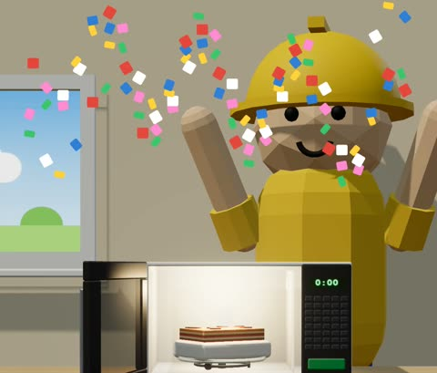

Como as coisas funcionam, em menos de 3 minutos.
O Feito Assim faz shorts animados em que o Nico, de capacete amarelo, mostra por dentro como funciona e como se constrói uma coisa do dia a dia: o micro-ondas, o avião, a geladeira.

Shorts Studio
O Shorts Studio é a ferramenta interna que o Feito Assim usa para produzir e publicar os próprios vídeos. Ela roda no computador do criador do canal e publica apenas nas contas do próprio Feito Assim, usando as APIs oficiais:
- YouTube Data API (YouTube API Services): envia o vídeo aprovado pelo criador, com título, descrição e data de publicação, e lê o nome do canal conectado.
- TikTok Login Kit e Content Posting API: publica o vídeo aprovado pelo criador na conta @feito.assim e lê o nome da conta conectada.
Nenhum vídeo é publicado sem a aprovação do criador. O app não é oferecido a outras pessoas e não coleta dados de espectadores. Detalhes na Política de Privacidade e nos Termos de Uso.
feitoassimytb@gmail.com
About (English)
Feito Assim is a Brazilian channel of short animated videos explaining how everyday things work and how they are built.
Shorts Studio is Feito Assim's internal tool for producing and publishing its own videos. It runs on the creator's own computer and posts only to Feito Assim's own accounts through the official APIs: the YouTube Data API (YouTube API Services), to upload creator-approved videos with title, description and publish time, and to read the connected channel's name; and TikTok Login Kit and Content Posting API, to post creator-approved videos to @feito.assim and to read the connected account's display name. Nothing is posted without the creator's approval. The app is not offered to other users and does not collect viewer data. See the Privacy Policy and Terms of Service.